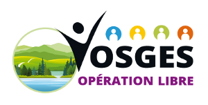
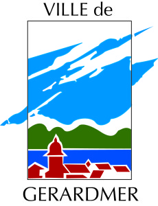
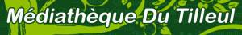
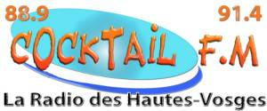
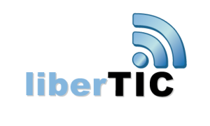
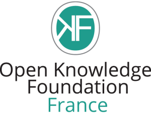
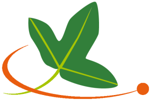
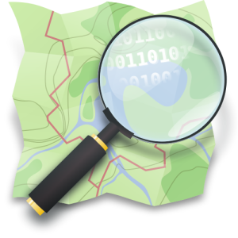
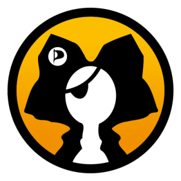
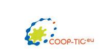

Vosges Opération Libre
17 et 18 mai 2014
à Gérardmer
Vosges Opération Libre est un événement inédit dans la région Grand Est. Il est ouvert à tous et orienté à la fois vers le grand public et les professionnels.
Cette opération libre est à l’initiative de Framasoft et d’autres d’associations d’envergure nationale ayant une grande expérience dans le Libre, l’ouverture des données, les licences libres et le libre accès.
Il s’agit de la seconde Opération Libre se déroulant sur le territoire français. La première ayant eu lieu à Brocas (Aquitaine) en 2013. Les Opérations Libres visent à rassembler, le temps d’un week-end, des acteurs du Libre en vue d’initier la démarche open data dans les petites villes et villages en présentant les outils disponibles, notamment des logiciels libres. Elles invitent les habitants à participer à l’ouverture et à la diffusion des données de leur territoire. Elles proposent aussi d’engager les citoyens dans un rapport différent avec leur territoire en montrant que le partage des connaissances leur permet d’être collectivement valorisées.
Cette initiative portera aussi sur les usages numériques, leur appropriation, leur potentiel de créativité et leur économie. Cette manifestation vise à promouvoir la culture libre et l’ouverture des données en organisant des actions thématiques formulées en stands, ateliers de formation, conférences, projection permanente de films libres, débats, etc.
Il s’agit d’un événement culturel et participatif où le logiciel libre et ses principes sont conçus comme autant de moyens au service des activités pratiques proposées à destination du grand public. Un travail préalable précédant la manifestation a été mené avec les acteurs de la vie culturelle locale, en particulier la médiathèque de Gérardmer (soirée Wikipédia et conférence).
Le programme de la manifestation est disponible à l’adresse http://vosges.operation-libre.org. Il comprendra 4 ateliers permanents, 4 ateliers ponctuels, 9 conférences, 1 conférence débat le samedi soir, 17 stands, des démonstrations, une projection permanente de films libres…
Partenariats
Ville de Gérardmer
Actuellement troisième ville des Vosges, Gérardmer est une cité pleine de charmes nichée entre lac, montagne et forêts et propose un savoir-faire industriel et un artisanat varié, autour des industries du textile et du bois. D’importantes manifestations sportives et culturelles à l’image du festival Fantastic’Arts, contribuent à faire de Gérardmer une ville dynamique, un lieu magique qui donne une immanquable envie d’y revenir. La Fête des Jonquilles au printemps, les compétitions de triathlon, les sports d’eau ou de glisse sont également privilégiés. A une altitude moyenne de 670 m, on y trouve un domaine de ski alpin, un domaine de ski nordique et également un tremplin de saut à ski.
{kind=link}
La médiathèque de Gérardmer participe activement à Vosges Opération Libre et organise, en amont de l’événement, un mois du Libre (avril 2014) comprenant conférences et ateliers.

Région Lorraine
 La Lorraine, ce sont 2,3 millions d’habitants, répartis sur quatre départements, la Meurthe-et-Moselle, la Meuse, la Moselle et les Vosges, aux richesses multiples, naturelles, culturelles et historiques. La Région Lorraine, c’est aussi une force vive économique avec un tissu de 140 000 entreprises, une force d’avenir avec ses 92 000 lycéens et ses 16 300 apprentis, une force solidaire avec ses 30 000 associations.
La Lorraine, ce sont 2,3 millions d’habitants, répartis sur quatre départements, la Meurthe-et-Moselle, la Meuse, la Moselle et les Vosges, aux richesses multiples, naturelles, culturelles et historiques. La Région Lorraine, c’est aussi une force vive économique avec un tissu de 140 000 entreprises, une force d’avenir avec ses 92 000 lycéens et ses 16 300 apprentis, une force solidaire avec ses 30 000 associations.
Editions Diamond
 Fondées en 1995 en Alsace, les Éditions Diamond éditent des contenus rédactionnels liés à l’informatique en général, et aux Logiciels Libres en particulier. De la découverte pédagogique réservée au grand public aux aspects les plus techniques de la sécurité et de l’électronique, en passant par l’analyse des grands enjeux du numérique, pas moins de cinq magazines sont disponibles chez tous les marchands de journaux. (GNU/Linux Magazine, Linux Pratique, Linux Essentiel, MISC et Open Silicium).
Fondées en 1995 en Alsace, les Éditions Diamond éditent des contenus rédactionnels liés à l’informatique en général, et aux Logiciels Libres en particulier. De la découverte pédagogique réservée au grand public aux aspects les plus techniques de la sécurité et de l’électronique, en passant par l’analyse des grands enjeux du numérique, pas moins de cinq magazines sont disponibles chez tous les marchands de journaux. (GNU/Linux Magazine, Linux Pratique, Linux Essentiel, MISC et Open Silicium).
Aujourd’hui, une nouvelle offre vous est proposée, vous pouvez vous abonner à la base documentaire en ligne de tous nos magazines. Vous pourrez consulter ainsi plus de 3500 articles qui sont parus dans nos magazines et bien plus à venir. Renseignez-vous !
Les Editions Diamond sont partenaires de Vosges Opération Libre.
Cocktail FM
Créé en 1995 Cocktail FM est une radio de proximité qui diffuse 24h sur 24 un programme propre avec un minimum de 4 rendez-vous d’information locale par jour. Cocktail FM se veut le reflet de la vie sociale, culturelle, associative, sportive et festive des Hautes Vosges.Cocktail Fm parraine de nombreux événements et organise aussi chaque année un grand concert avec le succès que l’on sait.
{kind=link}
Maison de la Culture et des loisirs
 La Maison de la Culture et des Loisirs de Gérardmer est une association loi 1901, reconnue comme «partenaire associé de la commune pour initier et développer des activités éducatives, culturelles et socio-culturelles». La maison coordonne ou participe à de nombreuses actions sociales et culturelles sur la ville.
La Maison de la Culture et des Loisirs de Gérardmer est une association loi 1901, reconnue comme «partenaire associé de la commune pour initier et développer des activités éducatives, culturelles et socio-culturelles». La maison coordonne ou participe à de nombreuses actions sociales et culturelles sur la ville.
Libre Action
 L’association Libre Action a pour objet la diffusion et la promotion de la culture dite “libre” (au sens du logiciel libre), notamment par le biais d’actions locales ponctuelles. Basée à Gérardmer, au coeur des Hautes Vosges, elle mêle actions locales et nationales en partenariat avec d’autres associations comme Framasoft et Wikimédia. Elle porte le projet Vosges Opération Libre auprès de la municipalité de Gérardmer et de la Région Lorraine.
L’association Libre Action a pour objet la diffusion et la promotion de la culture dite “libre” (au sens du logiciel libre), notamment par le biais d’actions locales ponctuelles. Basée à Gérardmer, au coeur des Hautes Vosges, elle mêle actions locales et nationales en partenariat avec d’autres associations comme Framasoft et Wikimédia. Elle porte le projet Vosges Opération Libre auprès de la municipalité de Gérardmer et de la Région Lorraine.
Framasoft
 Framasoft est un réseau d’éducation populaire, issu du monde éducatif, consacré principalement au logiciel libre. Il s’organise en trois axes sur un mode collaboratif : promotion, diffusion et développement de logiciels libres, enrichissement de la culture libre et offre de services libres en ligne.
Framasoft est un réseau d’éducation populaire, issu du monde éducatif, consacré principalement au logiciel libre. Il s’organise en trois axes sur un mode collaboratif : promotion, diffusion et développement de logiciels libres, enrichissement de la culture libre et offre de services libres en ligne.
Espace d’orientation, d’informations, d’actualités, d’échanges et de projets, Framasoft est une porte d’entrée francophone du logiciel libre. Sa communauté d’utilisateurs est créatrice de ressources et apporte assistance et conseil à ceux qui découvrent et font leurs premiers pas avec les logiciels libres.
Libertic
Association de loi 1901 travaillant à la promotion de l’ouverture des données (open data) en France. Ses actions s’articulent autour de trois axes: communication, sensibilisations et animations. L’association gère notamment le site www.opendata-map.org qui répertorie les initiatives d’ouverture de données en France et à initié les semaines européennes de l’open data et est membre partenaire d’Opendatafrance.
{kind=link}
Wikimédia-France
 Wikimédia-France œuvre pour le partage libre des connaissances par le soutien des projets Wikimédia en France. Pour cela, l’association développe des programmes – partenariats avec les institutions culturelles, formation, édit-a-thon,… – afin de rendre la connaissance accessible et gratuite pour tous.
Wikimédia-France œuvre pour le partage libre des connaissances par le soutien des projets Wikimédia en France. Pour cela, l’association développe des programmes – partenariats avec les institutions culturelles, formation, édit-a-thon,… – afin de rendre la connaissance accessible et gratuite pour tous.
Association GOALL – Groupe d’organismes acteurs du Libre en Lorraine
 L’association GOALL a pour objet d’aider tout organisme ayant une activité en Lorraine dans le domaine de la culture libre : informatique libre, cartographie libre, musique libre, art libre, connaissances libres, matériel libre, réseaux de communication libres etc. Le principe de la culture libre est de proposer légalement à tout le monde des œuvres, des informations, du matériel… en libre partage, usage, copie, étude, modification et redistribution. L’association poursuit un but non lucratif.
L’association GOALL a pour objet d’aider tout organisme ayant une activité en Lorraine dans le domaine de la culture libre : informatique libre, cartographie libre, musique libre, art libre, connaissances libres, matériel libre, réseaux de communication libres etc. Le principe de la culture libre est de proposer légalement à tout le monde des œuvres, des informations, du matériel… en libre partage, usage, copie, étude, modification et redistribution. L’association poursuit un but non lucratif.
Elle organise des rencontres, met à disposition des outils de communication, recherche des partenaires et des financements pour les projets libres. Elle est membre du CNLL.
Lorraine Data Network
 LDN (Lorraine Data Network) est une association pour la défense d’un Internet libre, neutre et décentralisé dont l’un des moyens d’action est d’être aussi un fournisseur d’accès à Internet associatif, citoyen et lorrain.
LDN (Lorraine Data Network) est une association pour la défense d’un Internet libre, neutre et décentralisé dont l’un des moyens d’action est d’être aussi un fournisseur d’accès à Internet associatif, citoyen et lorrain.
LDN travaille en particulier sur la sensibilisation à la protection de la vie privée sur Internet, et apporte des solutions concrètes en terme d’hébergement. LDN vise également à créer une dynamique locale à la Lorraine en faisant régulièrement se rencontrer les différents membres de l’association. Au même titre que les services d’hébergement, LDN propose des abonnements à Internet soumis à une charte éthique visant à respecter les droits fondamentaux des citoyens numériques, notamment en terme de neutralité et de vie privée.
Open Knowledge Foundation France
L’Open Knowledge Foundation France, association loi 1901 membre du réseau international Open Knowledge Foundation, se mobilise pour démontrer qu’un accès libre aux informations associé aux outils et aux communautés pour les utiliser sont des éléments essentiels pour améliorer notre société.
{kind=link}
L’association développe des outils, des projets et des communautés pour promouvoir l’open data et la culture libre en France et à l’International.
Veni Vidi Libri (VVL)
 L’association VVL (Veni, Vidi, Libri a pour objectif de promouvoir les licences libres ainsi que de faciliter le passage de créations sous licence libre. Elle travaille avec de nombreux autres projets de la communauté du Libre (qu’il s’agisse du logiciel, des données, de l’éducation, du cloud, du matériel, etc.) et aussi directement avec les créateurs.
L’association VVL (Veni, Vidi, Libri a pour objectif de promouvoir les licences libres ainsi que de faciliter le passage de créations sous licence libre. Elle travaille avec de nombreux autres projets de la communauté du Libre (qu’il s’agisse du logiciel, des données, de l’éducation, du cloud, du matériel, etc.) et aussi directement avec les créateurs.
Association Tela Botanica
Tela Botanica est une association de loi 1901 ayant pour objet principal de fédérer un réseau de botanistes francophones, de favoriser la communication au sein de ce réseau et d’animer différents projets mis en oeuvre en son sein dans les domaines de la flore et des habitats naturels. Dans ce cadre, Tela Botanica met en oeuvre différents projets de science participative en collaboration avec des partenaires (universités, établissements publics, ministère, autres associations) afin de promouvoir et élaborer des outils pour la communauté naturaliste, dont la diffusion est libre de droits.
{kind=link}
OpenStreetMap France
OpenStreetMap France est une association à but non lucratif régie par la loi de 1901 dont l’objectif est de promouvoir le projet OpenStreetMap et notamment la collecte, la diffusion et l’utilisation de données cartographiques sous licences libres.
{kind=link}
OpenStreetMap (OSM) est un projet international fondé en 2004 dans le but de créer une carte libre du monde. Nous collectons des données dans le monde entier sur les routes, voies ferrées, les rivières, les forêts, les bâtiments et bien plus encore !Les données cartographiques collectées sont ré-utilisables sous licence libre ODbL (depuis le 12 septembre 2012).
Open Edge
 Open Edge est une entreprise et un FabLab rural, située sur la commune de St-Avold. Il est dédié à la diffusion de la FoldaRap (une imprimante 3D open-source de type RepRap), et d’autre projets d’open-hardware en petite et moyenne série (tout en étant ouvert au grand public).
Open Edge est une entreprise et un FabLab rural, située sur la commune de St-Avold. Il est dédié à la diffusion de la FoldaRap (une imprimante 3D open-source de type RepRap), et d’autre projets d’open-hardware en petite et moyenne série (tout en étant ouvert au grand public).
Fondé par Emmanuel Gilloz et Alain Skiba.
Ville de Fontenoy-le-Château
 Dans la vallée du Côney, affluent de la Saône, Fontenoy-le-Château doit à sa situation frontalière ente Lorraine et Comté sa position jadis défensive. La naissance de la cité va de paire avec l’édification du château à la fin du Xe. Siècle.
Dans la vallée du Côney, affluent de la Saône, Fontenoy-le-Château doit à sa situation frontalière ente Lorraine et Comté sa position jadis défensive. La naissance de la cité va de paire avec l’édification du château à la fin du Xe. Siècle.
Cité puissante à la Renaissance, l’église Saint-Mansuy en est le témoin, puis anéantie à la guerre de Trente-Ans, Fontenoy retrouvera son lustre au XVIIIe Siècle comme en témoignent les hôtels de la rue principale. Fontenoy eut même l’honneur de voir naître le chef de file des Romantiques, le poète Gilbert.
Le XIXe, sera celui de la métallurgie on y fabrique des couverts étamés et des clous, on y brasse une bière excellente, les carrières et les scieries donnent du travail aux habitants. La renommée de la broderie de Fontenoy, broderie blanche au métier est internationale. Nous pouvons nous enorgueillir de l’enfant du pays, Julie-Victoire Daubié, première femme bachelier.
Comme dans de nombreuses vallées vosgiennes, l’industrie ira déclinant tout au long du XXe. s. Aujourd’hui dans un cadre préservé, entouré par les forêts forêts, le village ne résonne plus au bruit des forges et les brodeuses ne travaillent plus pour les trousseaux royaux, mais on peut encore admirer leur travail au Musée de la Broderie et de la Métallurgie au centre du village. Et si de l’antique château fort il ne reste que des ruines, ce sont celles du plus vieux donjon de Lorraine. Pour toutes ces raisons Fontenoy est apprécié par les touristes, les randonneurs et les plaisanciers du canal de l’Est qui font escale au port de plaisance.
Wikipédia
Site officiel de la commune
Open Food Facts
 Open Food Facts est une base de données de produits alimentaires libre et ouverte (en open data). Les produits sont ajoutés par des contributeurs grâce à une application mobile Android, iPhone et Windows Phone.
Open Food Facts est une base de données de produits alimentaires libre et ouverte (en open data). Les produits sont ajoutés par des contributeurs grâce à une application mobile Android, iPhone et Windows Phone.
Les petits débrouillards
 Le mouvement associatif des Petits Débrouillards qui, depuis 1984, offre aux enfants des activités scientifiques et techniques, participe de manière significative aux débats de société sur l’éducation et la culture. Organisé en réseau, il contribue à former des citoyens actifs, capables d’opinions réfléchies et critiques, acteurs de la construction du monde de demain.
Le mouvement associatif des Petits Débrouillards qui, depuis 1984, offre aux enfants des activités scientifiques et techniques, participe de manière significative aux débats de société sur l’éducation et la culture. Organisé en réseau, il contribue à former des citoyens actifs, capables d’opinions réfléchies et critiques, acteurs de la construction du monde de demain.
April
L’April Pionnière du logiciel libre en France, l’April, constituée de 3873 adhérents (3500 individus, 373 entreprises, associations et organisations), est depuis 1996 un acteur majeur de la démocratisation et de la diffusion du logiciel libre et des standards ouverts auprès du grand public, des professionnels et des institutions dans l’espace francophone.
{kind=link}
TUXservices et SC-Assistance
SC-Assistance
 Intervenants au prés de sociétés et de structures diverses, TUXservices et SC-Assistance implantent des solutions libres et des outils performants en favorisant la mise en place d’“organisations apprenantes”.
Intervenants au prés de sociétés et de structures diverses, TUXservices et SC-Assistance implantent des solutions libres et des outils performants en favorisant la mise en place d’“organisations apprenantes”.
Mini-entreprise TimberWolf Créativ’ – Lycée Professionnel Tertiaire Camille Schneider MOLSHEIM
 Mini-entreprise “Libre comme le Loup” ayant pour but d’accompagner le retour du loup en Alsace auprès du grand public, à l’aide d’un E-Pub où vous êtes le héros sous Licence CC by SA.
Mini-entreprise “Libre comme le Loup” ayant pour but d’accompagner le retour du loup en Alsace auprès du grand public, à l’aide d’un E-Pub où vous êtes le héros sous Licence CC by SA.
24 élèves de 1ère Bac Pro Gestion-Administration, vous emmènent au travers des contrées alsaciennes découvrir les contes et légendes oubliés sur le loup. Enigmes, dessins et musiques au rendez-vous.
https://www.facebook.com/timberwolf.creativ
Identité Web Lorraine
 Spécialisée dans la création de site internet et le référencement, cette entreprise géromoise propose des solutions web pour les professionnels.
Spécialisée dans la création de site internet et le référencement, cette entreprise géromoise propose des solutions web pour les professionnels.
Son implication pour le développement de la présence en ligne de Gérardmer se traduit par la rédaction d’articles servant à asseoir et à dynamiser la notoriété de la perle des Vosges.
C’est donc à travers ces notions de partages qu'(Identité Web Lorraine) adhère à Vosges Opération Libre.
DESCLICKS l’Informatique Solidaire
 L’association Desclicks, créée en 2005, a pour objet de rendre accessible au plus grand nombre les technologies de l’information et de la communication. L’association est spécialisée dans le réemploi de matériel informatique et la lutte contre l’obsolescence programmée. Nous organisons aussi des formations ainsi que des actions de sensibilisation aux logiciels et aux arts libres.
L’association Desclicks, créée en 2005, a pour objet de rendre accessible au plus grand nombre les technologies de l’information et de la communication. L’association est spécialisée dans le réemploi de matériel informatique et la lutte contre l’obsolescence programmée. Nous organisons aussi des formations ainsi que des actions de sensibilisation aux logiciels et aux arts libres.
Parti Pirate Alsace
Section locale du parti pirate. Nous défendons les libertés fondamentales et individuelles, le partage du savoir et de la culture, la démocratie participative et liquide. Entre autres combats, nous sommes engagés en faveur des logiciels libres, de la neutralité du net, des créatives commons et de l’éducation numérique.
{kind=link}
Nancy Numérique
 Nancy Numérique rassemble entreprises, écoles, et acteurs du numérique à Nancy et en Lorraine.
Nancy Numérique rassemble entreprises, écoles, et acteurs du numérique à Nancy et en Lorraine.
L’association a organisé des manifestations avec la FING ainsi qu’avec Pôle Emploi. En juin 2013 elle a organisé un festival dans le cadre de l’événement Nancy Renaissance 2013.
Elle prépare un cycle culturel autour de la vie privée, cycle dont le coup d’envoi sera donné le 23 mai à Nancy à la MJC Pichon avec un débat autour d’une interrogation : “Numérique contre Vie Privée ?”
Oxygene
 Oxygène est affiliée à la Fédération Française de SKI et dépend du Comité Régional du Massif des Vosges. Son but : Promouvoir les activités de Pleine Nature en général, celles de glisse en particulier comme le ski, le surf, le ski-alpinisme, le télémark, etc, mais aussi la randonnée à pied, en VTT, en canoë, le roller et les voyages lointains. Son siège social se trouve à Saizerais, village de 1500 habitants environ situé au nord de Nancy à l’intérieur du Parc Régional de Lorraine.
Oxygène est affiliée à la Fédération Française de SKI et dépend du Comité Régional du Massif des Vosges. Son but : Promouvoir les activités de Pleine Nature en général, celles de glisse en particulier comme le ski, le surf, le ski-alpinisme, le télémark, etc, mais aussi la randonnée à pied, en VTT, en canoë, le roller et les voyages lointains. Son siège social se trouve à Saizerais, village de 1500 habitants environ situé au nord de Nancy à l’intérieur du Parc Régional de Lorraine.
Cooptic
 Le projet CoopTic est un projet européen Leonardo Da Vinci pour la formation de formateurs d’animateurs de réseaux. Ce projet a produit un ebook Faire ensemble : Manuel à l’usage des animateurs de réseaux collaboratifs gratuit et libre (CC-by-sa) qui regroupe concepts, méthodes, outils et témoignages pour l’animation de réseaux ou de projets collaboratifs. Ce projet est porté par SupAgro Florac et l’association Outils-réseaux pour la France, le CRIE de Mouscron pour la Belgique, et l’Aposta pour la Catalogne.
{kind=link}